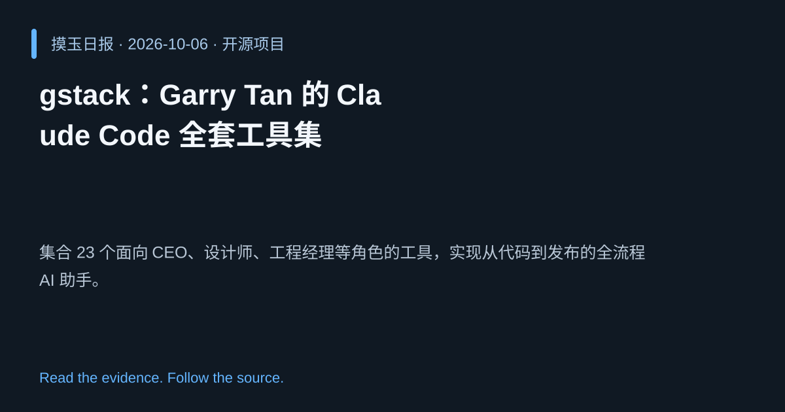

2026-10-06 · Asia/Shanghai · 开源项目 · #5
gstack：Garry Tan 的 Claude Code 全套工具集
garrytan/gstack
集合 23 个面向 CEO、设计师、工程经理等角色的工具，实现从代码到发布的全流程 AI 助手。
为什么值得关注
提供完整的角色化 AI 工作流，帮助团队在开发、设计、运营各环节实现自动化与加速。
- 23 个专用工具覆盖产品管理、设计、开发、发布、文档与质量保障。
- 基于 TypeScript，实现即插即用的 Claude Code 环境。

热度 48.3 / 100；排名与评分保留该期记录。